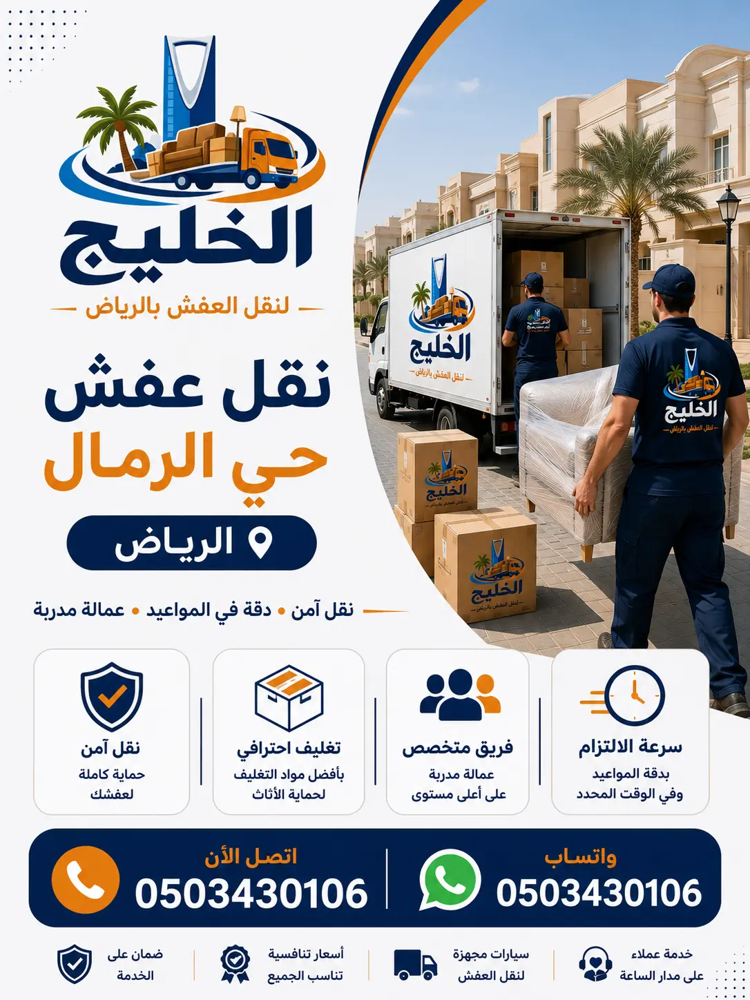

شركة الخليج لنقل العفش تقدم خدمات نقل الأثاث في حي الرمال بالرياض بأعلى مستويات الجودة والاحترافية، حيث نوفر فك وتركيب الأثاث، تغليف العفش، ونقل جميع أنواع العفش باستخدام سيارات مجهزة.
فك وتركيب جميع أنواع الأثاث باحترافية
تغليف احترافي لحماية الأثاث من الخدوش
ضمان على سلامة الأثاث أثناء النقل
شركة نقل عفش حي الرمال بالرياض هي وجهتك المثالية لنقل العفش والأثاث بكل أمان واحترافية. نحن نمتلك خبرة طويلة في نقل الأثاث تمتد لأكثر من 15 عاماً في حي الرمال وجميع أحياء شرق الرياض. نتميز بـ السرعة في التنفيذ حيث نلتزم بالمواعيد المحددة وننتهي من نقل العفش في أقل وقت ممكن دون أي تأخير. فريقنا يضم عمالة مدربة على أعلى مستوى للتعامل مع جميع أنواع الأثاث من فلل وقصور وشقق ومكاتب. نقدم أسعاراً مناسبة تنافسية تبدأ من 300 ريال مع عروض خاصة للعملاء الدائمين. نحن نحرص على الالتزام بالمواعيد وعدم التأخير أبداً، لأن وقت العميل ثمين. سواء كنت بحاجة إلى نقل عفش حي الرمال لمنزلك الجديد أو نقل أثاث حي الرمال لمكتبك، فإن فريقنا جاهز لتلبية طلبك على مدار 24 ساعة. كما نقدم خدمات فك وتركيب عفش حي الرمال بواسطة نجارين متخصصين، وتغليف عفش حي الرمال باستخدام أفضل مواد التغليف. نحن نخدم جميع أنحاء حي الرمال بما في ذلك الشقق الفاخرة والفلل الكبيرة. يمكنك زيارة صفحة خدمات نقل العفش بالرياض لمزيد من المعلومات. اتصل بنا اليوم للحصول على أفضل خدمة نقل عفش في حي الرمال.
نحن في شركة الخليج لنقل العفش ندرك أن نقل العفش من المنزل القديم إلى الجديد قد يكون مرهقاً، لذلك نقدم لك خدمة متكاملة تشمل كل شيء من الألف إلى الياء. فريقنا المدرب يصل إلى موقعك في الوقت المحدد، ويقوم بمعاينة الأثاث وتحديد العدد المناسب من العمال والسيارات. نحن نستخدم أحدث التقنيات في نقل العفش بالرياض لضمان وصول أثاثك بحالة ممتازة. يمكنك أيضاً الاطلاع على أفضل شركة نقل عفش في الرياض لتعرف لماذا نحن الخيار الأمثل.

نحن نقدم مجموعة متكاملة من خدمات نقل العفش في حي الرمال تشمل نقل أثاث المنازل ونقل الأثاث السكني ونقل العفش الكامل للفلل والقصور والشقق والمكاتب. نستخدم أحدث السيارات المجهزة بأنظمة تثبيت متطورة لحماية الأثاث أثناء النقل. خدماتنا تشمل أيضاً فك وتركيب العفش وتغليف الأثاث بمواد عالية الجودة. نحن نخدم جميع أنحاء حي الرمال وشرق الرياض، ونضمن لك وصول عفشك إلى المكان الجديد بحالة ممتازة. سواء كنت بحاجة إلى نقل أثاث داخل الرياض أو خدمات تغليف العفش، فإن فريقنا جاهز. كما نقدم خدمة فك وتركيب غرف النوم وتركيب أثاث ايكيا. نحن نضمن لك راحة البال التامة مع خدماتنا المتكاملة. اتصل بنا لتحصل على عرض سعر مجاني.
نحن نقدم خدمات نقل العفش داخل الرياض بجودة عالية وأسعار تنافسية. كما يمكنك الاستفادة من دليل شركات نقل العفش بالرياض لتتعرف على خدماتنا المميزة. نحرص دائماً على تقديم أفضل الخدمات لعملائنا في حي الرمال وجميع أحياء الرياض.
نقدم خدمة متخصصة في نقل عفش المنازل بحي الرمال تشمل جميع محتويات المنزل. نحن نقوم بـ نقل غرف النوم بجميع أنواعها (أسرّة، خزائن، تسريحات) مع الفك والتركيب بواسطة نجارين متخصصين. كما ننقل المجالس العربية والكنب الكبيرة باستخدام سيارات مجهزة ومواد تغليف عالية الجودة لحماية الأقمشة والخشب. ننقل الكنب بجميع أنواعه (زاوية، كلاسيك، حديث) مع تغليف كامل بالاسترتش والبطانيات الواقية. ننقل الأجهزة الكهربائية مثل الثلاجات والغسالات والمكيفات وشاشات التلفزيون باستخدام كراتين مقواة وفوم لحماية الزجاج والشاشات. ننقل المطابخ سواء كانت خشبية أو ألمنيوم مع فك وتركيب دقيق. نحن ندرك أن المنزل هو مملكتك الصغيرة، لذلك نتعامل مع أثاثك وكأنه أثاثنا. نستخدم دينا نقل عفش حي الرمال للشقق الصغيرة وشاحنات كبيرة للفلل. يمكنك التعرف على المزيد من خدمات نقل الأثاث بالرياض. كما نقدم خدمة فك وتركيب غرف النوم بشكل منفصل. اتصل بنا لنقل منزلك بأمان وسرعة.
نحن نحرص على تقديم خدمة نقل العفش بالرياض بأعلى معايير الجودة. كما ننصح بقراءة نصائح مهمة قبل نقل العفش لتكون على دراية كاملة بعملية نقل المنزل. فريقنا جاهز لنقل جميع محتويات منزلك من حي الرمال إلى أي مكان في الرياض.
نحن متخصصون في نقل الشقق السكنية بحي الرمال ونعلم التحديات التي تواجه نقل العفش من وإلى الأدوار المرتفعة. نقدم خدمة نقل شقق حي الرمال بأسعار تنافسية تشمل نقل أثاث الشقق ونقل عفش العمائر باستخدام عمالة مدربة. نحن نستخدم ونش رفع عفش حي الرمال للأبراج العالية التي لا تحتوي على مصاعد كبيرة، أو لنقل الأثاث الثقيل مثل الخزائن الضخمة والثلاجات. نقدم أيضاً نقل العفش للأدوار المرتفعة بكل سهولة وأمان. فريقنا لديه خبرة في التعامل مع بوابات الأمن في الأبراج السكنية والحصول على التصاريح اللازمة. نضمن لك نقل عفش شقتك بسرعة واحترافية. تعرف على نصائح مهمة قبل نقل العفش من مدونتنا. كما يمكنك الاطلاع على أفضل طرق تغليف الأثاث.
نحن نقدم خدمات نقل الشقق في الرياض بجودة عالية. كما يمكنك الاستفادة من خدمات فك وتركيب الأثاث في الرياض لضمان نقل آمن لشقتك.
خدمتنا في نقل الفلل والقصور بحي الرمال مصممة خصيصاً للتعامل مع الأثاث الفاخر والتحف الثمينة. نحن ننقل نقل فلل حي الرمال ونقل القصور بأعلى معايير الجودة. نتعامل مع نقل الأثاث الفاخر ونقل التحف والثريات بكل عناية وحرفية. نستخدم مواد تغليف خاصة (فوم سميك، كراتين مزدوجة، بطانيات صوفية) لحماية الأثاث الثمين. لدينا عمالة مدربة على تفكيك الثريات الكريستالية الكبيرة وتغليف قطعها بشكل منفصل. ننقل المجالس الكبيرة والكنب الضخم باستخدام سيارات مجهزة برافعات. نقدم أيضاً أفضل شركة نقل عفش في الرياض للفلل الفاخرة. اقرأ أيضاً أخطاء شائعة عند نقل العفش لتتجنبها.
نحن نقدم خدمات نقل الفلل في الرياض بأعلى مستويات الجودة. فريقنا جاهز لنقل فيلتك أو قصرك من حي الرمال إلى أي مكان في الرياض. يمكنك أيضاً الاستفادة من أفضل شركات نقل العفش في الرياض للحصول على أفضل خدمة.
نحن نقدم خدمة احترافية في نقل المكاتب والشركات بحي الرمال بأقل وقت ممكن لضمان عدم تعطيل أعمالكم. تشمل خدماتنا نقل مكاتب الرياض ونقل شركات حي الرمال ونقل الأثاث المكتبي (مكاتب، كراسي، خزائن) ونقل الملفات والأجهزة. لدينا فريق متخصص في فك وتركيب المكاتب الحديثة ونقل السيرفرات والأجهزة الحساسة بمواد مضادة للصدمات. نعمل خارج أوقات الدوام الرسمي (مساءً أو عطلات نهاية الأسبوع) لضمان عدم تأثر إنتاجية شركتك. تعرف على دليل نقل العفش في الرياض وأفضل شركات نقل العفش في الرياض.
نحن نقدم خدمات نقل المكاتب في الرياض بجودة عالية. فريقنا جاهز لنقل مكتبك أو شركتك من حي الرمال إلى أي مكان في الرياض. يمكنك أيضاً الاستفادة من الفرق بين شركات النقل المحترفة والعادية لاختيار الأفضل.
نعتبر فك وتركيب العفش بحي الرمال من أهم خدماتنا التي تميزنا عن غيرنا. لدينا نجارين متخصصين في فك أثاث حي الرمال وتركيب أثاث حي الرمال لجميع أنواع الأثاث. نقدم فك غرف النوم وفك المطابخ وفك المجالس وتركيب غرف النوم وتركيب المطابخ وتركيب الأثاث المكتبي بدقة متناهية. نستخدم أدوات متخصصة لضمان عدم تلف أي قطعة أثناء الفك. نعيد تركيب الأثاث في الموقع الجديد كما كان أو حسب رغبة العميل. تعرف على خدمات فك وتركيب الأثاث في الرياض.
نحن نقدم خدمة تركيب أثاث ايكيا في الرياض لجميع عملائنا في حي الرمال. كما نقدم فك وتركيب العفش في الرياض بجودة عالية. فريقنا جاهز لفك وتركيب جميع أنواع الأثاث في منزلك أو مكتبك.
خدمة تغليف العفش في حي الرمال هي خط الدفاع الأول لحماية الأثاث والمقتنيات الثمينة أثناء عمليات النقل، ولذلك نولي هذه المرحلة اهتماماً كبيراً لضمان وصول جميع القطع بحالتها الأصلية دون تعرضها للخدوش أو الكسور أو الأتربة. نستخدم أفضل مواد التغليف المعتمدة في مجال نقل الأثاث مثل البابل راب عالي الجودة والاسترتش المطاطي والكراتين المقواة والفوم الواقي والبطانيات المخصصة لحماية القطع الحساسة والأثاث الفاخر. كما نقدم خدمات تغليف الزجاج والمرايا والتحف القابلة للكسر باستخدام طبقات حماية إضافية، بالإضافة إلى تغليف الأجهزة الكهربائية مثل الثلاجات والغسالات والشاشات والمكيفات بطريقة تضمن سلامتها أثناء التحميل والتنزيل. ونوفر أيضاً تغليف غرف النوم بما تحتويه من أسرة وخزائن وتسريحات، إلى جانب تغليف المطابخ والخزائن والأجهزة الملحقة بها، وكذلك تغليف الكنب والمجالس والسجاد باستخدام مواد متخصصة تحافظ على الأقمشة والأسطح من التلف أو الاتساخ. يعتمد فريقنا على أساليب تغليف حديثة تناسب كل نوع من أنواع الأثاث لضمان أعلى مستويات الحماية طوال رحلة النقل. تعرف على أفضل مواد تغليف الأثاث التي نستخدمها في جميع أعمال النقل والتخزين.
نحن نقدم خدمات تغليف العفش في الرياض بجودة عالية. يمكنك أيضاً الاطلاع على أفضل طرق تغليف الأثاث لتعرف كيف نحمي أثاثك. فريقنا جاهز لتغليف جميع محتويات منزلك أو مكتبك في حي الرمال.
نمهدلكم أسطولاً متكاملاً وحديثاً من دينا نقل عفش حي الرمال وسيارات نقل أثاث مجهزة بأحدث وسائل الحماية والتثبيت لضمان نقل الأثاث بأمان تام. تشمل خدماتنا توفير سيارة نقل عفش مغلقة ومجهزة لحماية الأثاث من العوامل الخارجية مثل الغبار وأشعة الشمس والأمطار أثناء النقل داخل الرياض أو إلى المدن المجاورة. كما نوفر شاحنات نقل أثاث بأحجام مختلفة تناسب جميع الاحتياجات، سواء لنقل شقة صغيرة أو فيلا كبيرة أو قصر يحتوي على كميات كبيرة من الأثاث والمقتنيات. نقدم خدمة دينا نقل عفش للشقق والاستراحات والمكاتب الصغيرة بسعات متنوعة تستوعب من 3 إلى 5 غرف مع إمكانية إضافة خدمات الفك والتركيب والتغليف حسب طلب العميل. وتتميز جميع سياراتنا بوجود وسائل تثبيت احترافية تمنع تحرك الأثاث أثناء السير وتحافظ عليه من الخدوش أو الكسر. كما نوفر سيارات نقل مغلقة مخصصة لنقل الأثاث الفاخر والأجهزة الكهربائية الحساسة لمسافات طويلة مع أعلى درجات الأمان. أما الشاحنات الكبيرة فهي الخيار المثالي لنقل الفلل والقصور والمكاتب التجارية الضخمة التي تتطلب مساحات تحميل واسعة وتجهيزات خاصة. يعمل سائقونا وفريق التحميل بخبرة كبيرة في تنظيم وترتيب الأثاث داخل المركبات لضمان الاستفادة القصوى من المساحة والحفاظ على جميع القطع طوال رحلة النقل. ويمكنك التعرف على المزيد من التفاصيل حول أسعار نقل العفش في الرياض واختيار السيارة المناسبة لاحتياجاتك وميزانيتك.
نحن نقدم سيارات نقل العفش في الرياض بجودة عالية. فريقنا جاهز لتوفير السيارة المناسبة لنقل عفشك من حي الرمال إلى أي مكان في الرياض.
نوفر خدمة متكاملة في تخزين العفش بحي الرمال داخل مستودعات تخزين عفش مجهزة بأحدث أنظمة الحماية والأمان لضمان الحفاظ على الأثاث في أفضل حالة ممكنة طوال فترة التخزين، سواء كانت قصيرة المدى أو طويلة المدى. تعتمد مستودعاتنا على أنظمة مراقبة على مدار الساعة وكاميرات أمنية حديثة بالإضافة إلى إجراءات صارمة للتحكم في الدخول والخروج، مما يضمن حماية الأثاث من أي عوامل خارجية أو مخاطر محتملة.
نقدم خدمات تخزين أثاث وحفظ الأثاث بطريقة احترافية تشمل فك الأثاث وتغليفه باستخدام أفضل مواد الحماية مثل البابل راب والكراتين المقواة والبطانيات العازلة، ثم ترتيبه داخل المستودعات بشكل منظم يمنع التكدس أو الضغط على القطع، مما يحافظ على سلامة كل قطعة مهما طالت مدة التخزين. كما نوفر بيئة تخزين مكيفة تساعد على حماية الأثاث الخشبي والمفروشات والأجهزة الكهربائية من الرطوبة أو الحرارة أو الغبار. نوفر خيارات مرنة تناسب جميع العملاء سواء كان تخزين طويل المدى أثناء السفر أو الانتقال أو تجديد المنزل، أو تخزين قصير المدى لحفظ الأثاث لفترة مؤقتة أثناء أعمال الصيانة أو الترميم. كما نراعي اختلاف احتياجات العملاء من خلال توفير مساحات تخزين متعددة الأحجام تناسب الشقق الصغيرة والفلل الكبيرة والمكاتب التجارية. تبدأ أسعار الخدمة من 150 ريال شهرياً مع إمكانية توفير عروض خاصة للفترات الطويلة أو كميات الأثاث الكبيرة، مع ضمان تقديم أعلى مستوى من الخدمة مقابل أفضل سعر في السوق. نحرص أيضاً على توفير خدمة نقل الأثاث من وإلى المستودعات باستخدام سيارات مجهزة وفرق عمل مدربة لضمان وصول الأثاث بأمان تام دون أي تلف. يمكنك التعرف على المزيد حول خدمات تخزين العفش بالرياض وكذلك الاطلاع على أفضل شركة تخزين عفش في الرياض لمعرفة تفاصيل أكثر عن طرق التخزين الآمن والمستودعات المتوفرة لدينا.
زيارة الموقع لتقييم حجم الأثاث وتحديد العدد المطلوب من العمال والسيارات.
فك الأثاث بواسطة نجارين متخصصين باستخدام أدوات مناسبة.
تغليف جميع قطع الأثاث بمواد عالية الجودة.
تحميل الأثاث على السيارات بشكل منظم وآمن.
نقل الأثاث إلى الموقع الجديد بسرعة وأمان.
تنزيل الأثاث بحرص في المكان المحدد.
إعادة تركيب الأثاث في الموقع الجديد بدقة.
تسليم الموقع للعميل والتأكد من سلامة جميع القطع.
نحن نقدم أرخص شركة نقل عفش في الرياض مع جودة لا تضاهى. كما ننصح بقراءة نقل عفش رخيص بالرياض للمقارنة.
نقدم لكم جدول مقارنة يوضح الفرق بين شركة الخليج والشركات الأخرى في أسعار نقل العفش حي الرمال الرياض وجودة الخدمات المقدمة.
| البند | شركة الخليج | شركات أخرى |
|---|---|---|
| سعر نقل شقة (3 غرف) | 300 - 600 ريال | 500 - 900 ريال |
| سعر نقل فيلا (5 غرف) | 800 - 2000 ريال | 1200 - 3500 ريال |
| سعر ونش رفع عفش | 400 - 800 ريال | 600 - 1200 ريال |
| دينا نقل عفش | 250 - 400 ريال | 350 - 600 ريال |
| مواد التغليف | فوم + استرتش + كراتين مقواة | مواد بسيطة أو بدون تغليف |
| فك وتركيب | نجارين محترفين مجاناً | برسوم إضافية 200-400 ريال |
| ضمان شامل | نعم ضد الكسر والتلف | بدون ضمان أو ضمان محدود |
بفضل خبرتنا الطويلة، نقدم أرخص شركة نقل عفش في الرياض مع جودة لا تضاهى. كما ننصح بقراءة نقل عفش رخيص بالرياض للمقارنة.
نفخر بثقة عملائنا الذين جربوا خدماتنا في نقل العفش بحي الرمال. إليكم بعض آرائهم:
"أفضل شركة نقل عفش بحي الرمال. تعاملت معهم لنقل شقتي من حي الرمال إلى حي النرجس. كان الفريق محترفاً جداً، والأثاث وصل سليماً دون أي خدوش. أنصح الجميع بالتعامل معهم."
— أبو عبدالله
"نقلت فيلتي من حي الرمال إلى حي الياسمين مع شركة الخليج. الأسعار منافسة جداً، والعمالة مدربة على فك وتركيب الأثاث الفاخر. شكراً لكم على الخدمة الممتازة."
— أم محمد
"تعاملت مع أكثر من شركة نقل، لكن شركة الخليج كانت الأفضل في نقل عفش حي الرمال. الالتزام بالمواعيد، النظافة، وسرعة الإنجاز. سأستمر في التعامل معهم."
— المهندس خالد
"خدمة نقل عفش بحي الرمال متميزة. قاموا بنقل جميع أغراضي من شقة 4 غرف في حي الرمال إلى فيلا في حي النرجس. الأثاث وصل بحالة ممتازة. شكراً للفريق المحترف."
— د. سامي
يمكنكم قراءة المزيد من آراء العملاء على مدونتنا أو زيارة صفحتنا على نقل الأثاث بالرياض للاطلاع على تجارب أخرى.
تقدم شركة الخليج لنقل العفش خدماتها المتكاملة من الفك والتركيب والتغليف والنقل والشحن في كافة أحياء ومناطق العاصمة الرياض، بأسطول سيارات حديثة وفنيين مدربين. انقر على الحي للوصول للتفاصيل:
أهم الأسئلة التي تصلنا من عملائنا في حي الرمال.
شركة الخليج هي الأفضل بفضل خبرتها وسياراتها المجهزة وأسعارها المناسبة وضمانها الشامل. أفضل شركة نقل عفش بالرياض
تبدأ الأسعار من 300 ريال للشقق الصغيرة حسب كمية الأثاث والخدمات المطلوبة. تفاصيل الأسعار
نعم، لدينا نجارين متخصصين لفك وتركيب جميع أنواع الأثاث. فك وتركيب العفش في الرياض
نعم، نستخدم أفضل مواد التغليف لحماية الأثاث من الخدوش والكسر. تغليف العفش في الرياض
نعم، نوفر فنيين متخصصين لتركيب أثاث ايكيا بجميع أنواعه بحي الرمال. تركيب أثاث ايكيا
نعم، نوفر ونش رفع للأبراج العالية والأثاث الثقيل.
نعم، لدينا سيارات مغلقة لنقل العفش لمسافات طويلة. سيارات نقل العفش
نرسل من 3 إلى 5 عمال حسب حجم الشقة.
نعم، لدينا مستودعات آمنة ومكيفة بأسعار تبدأ من 150 ريال شهرياً. تخزين العفش في الرياض
نقدم ضماناً شاملاً على سلامة العفش من الكسر والتلف. كيفية حماية الأثاث
تتراوح من 4 إلى 8 ساعات حسب كمية الأثاث.
نعمل 24 ساعة طوال أيام الأسبوع بما في ذلك الجمعة والعطلات.
نعم، نعمل مساءً وفي عطلات نهاية الأسبوع لشركات. نقل المكاتب بالرياض
حسب حجم العفش وعدد العمال والمسافة والخدمات المطلوبة. أسعار نقل العفش
يمكنك الاتصال على 0503430106 أو عبر الواتساب.
إذا كنت تبحث عن أفضل شركة نقل عفش حي الرمال بالرياض بخبرة واحترافية، فنحن نقدم لك خدمات متكاملة وأسعار تنافسية.
نقل عفشك بحي الرمال يبدأ باختيار الشريك المناسب، ونحن شريكك الموثوق.